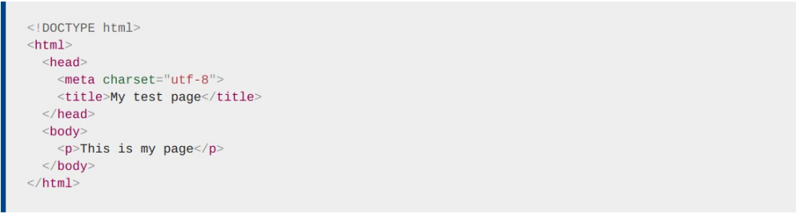
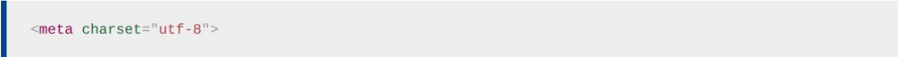

Revisemos el documento HTML que mencionamos párrafos atrás:
El encabezado HTML es el contenido del elemento <head>, a diferencia del contenido del elemento <body> este no se muestra en la pagina. En cambio, su tarea es contener metadatos sobre el documento. En el ejemplo anterior, la cabecera es bastante pequeña, sin embargo, en páginas más grandes, puede llenarse bastante. Nuestro objetivo no es mostrar cómo usar todo lo que posiblemente se pueda poner en la cabecera, sino más bien enseñarle cómo usar los elementos principales que querrá incluir y darle algo de familiaridad.
Ya hemos visto el elemento <title> en acción. Esto se puede usar para agregar un título al documento. Sin embargo, esto puede confundirse con el elemento <h1>, que se usa para agregar un encabezado de nivel superior al contenido de su cuerpo, esto a veces también se conoce como el título de la página. ¡Pero son cosas diferentes!
Los contenidos de los elementos <title> también se utilizan de otras formas. Por ejemplo, si intenta marcar la página, verá el contenido de <title> completado como el nombre de marcador sugerido. Tambien son utilizados en los resultados de búsqueda.
Metadatos: el elemento <meta>
Los metadatos son datos que describen datos, y HTML tiene una forma "oficial" de agregar metadatos a un documento: el elemento <meta>.
En el ejemplo que vimos arriba, se incluyó esta línea:
Si configura la codificación de caracteres en ISO-8859-1, por ejemplo (el juego de caracteres para el alfabeto latino), la representación de su página puede parecer desordenada: